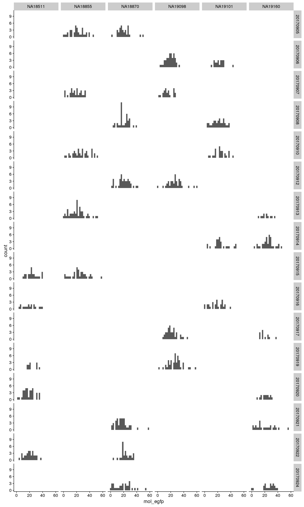
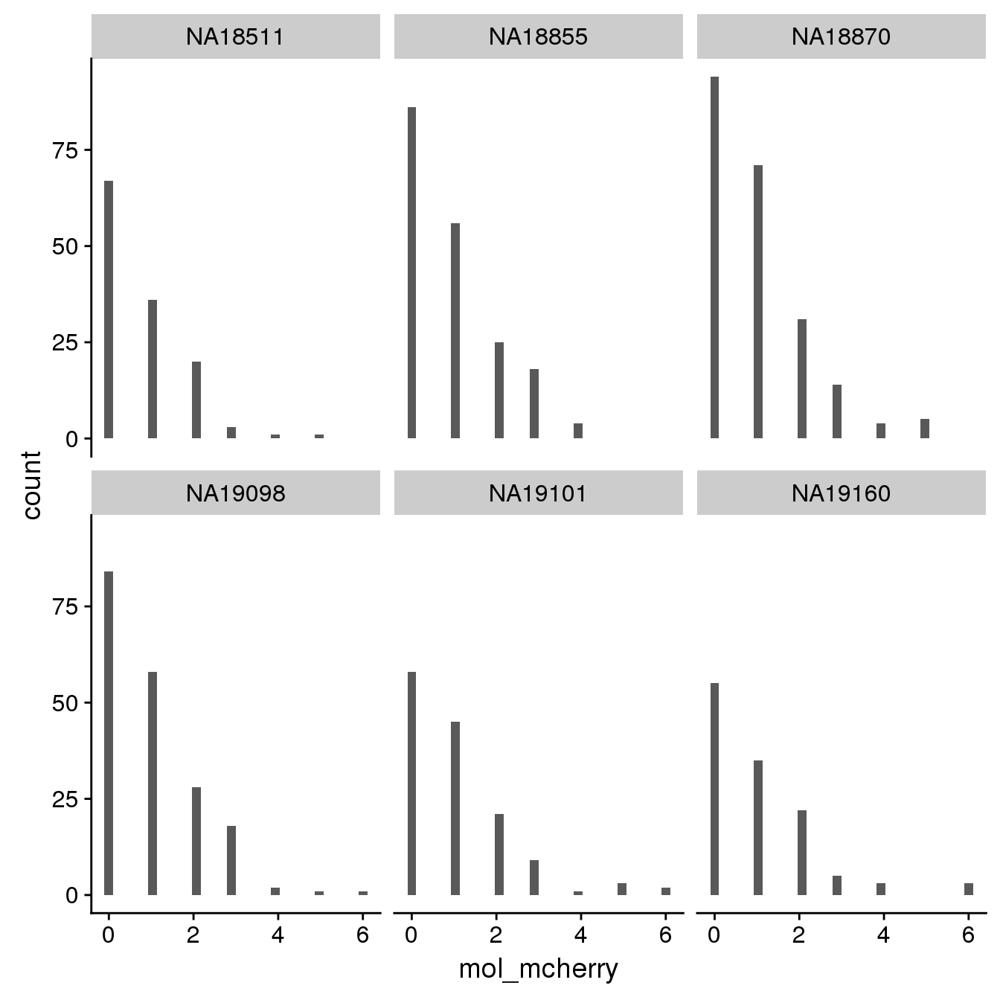
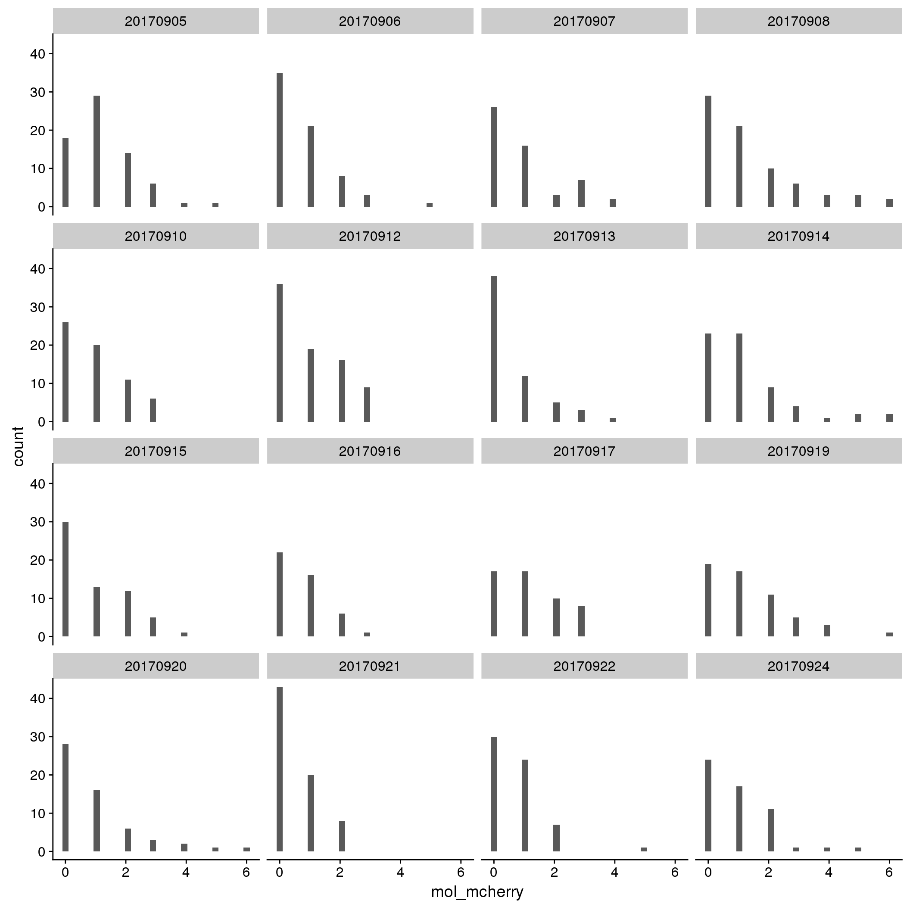
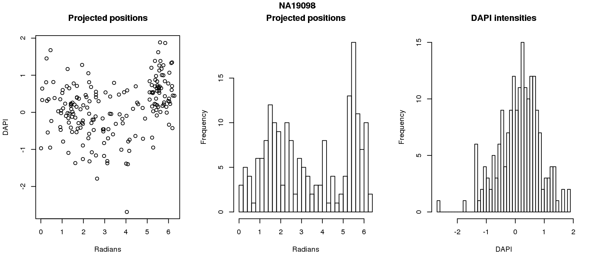
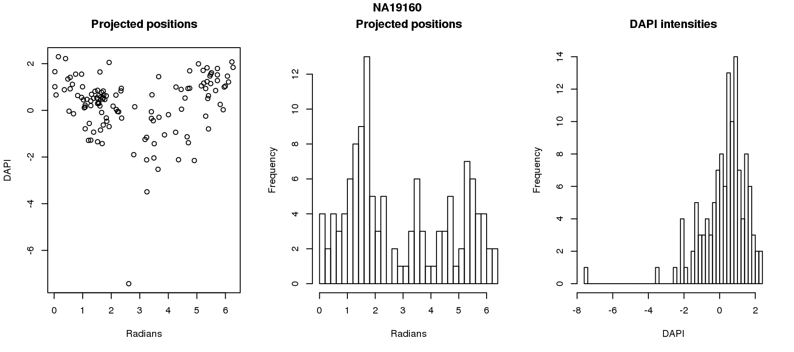

Investigate intensities against transgenes
Joyce Hsiao
Last updated: 2018-03-06
Code version: 3d2e2a8
Introduction/Summary
Observations:
There are more reads mapped to EGFP than to mCherry. The transgene sequence from 5’ to 3’ end: EGFP -> IRES (Internal Ribosomal Entry Site) -> mCherry -> Promoter region. The sequence is transcribed as one long transcript from 5’ to 3’ mCherry, IRES, EGFP. The IRES allows the translation to continue after mCherry onto EGFP. The STRT-seq protocol that we use is prone to high coverage bias toward 3’end of the mRNA transcript, which could be a possible explanation for the high coverage of EGFP in our data.
To determine if the transgene is silenced, we consider the number of molecules mapped to EGFP or mCherry. If there’s no molecules mapped to either translation region, we consider that there’s random silencing going on for the cell.
Conclusion:
Transgene molecule count is not a quality proxy for random silencing of the transgene.
Transgene molecule count is not correlated with intensity measures.
Packages
library(ggplot2)
library(cellcycleR)
library(data.table)
library(dplyr)
library(cowplot)
library(wesanderson)
library(RColorBrewer)
library(Biobase)Data
Import sequencing data.
# fname <- Sys.glob("../data/eset/*.rds")
# eset <- Reduce(combine, Map(readRDS, fname))
#
# pdata <- pData(eset)
# pdata$unique <- paste(pdata$image_individual, sprintf("%05d", pdata$image_label), sep="_")
df <- readRDS(file="../data/eset-filtered.rds")
pdata <- pData(df)
fdata <- fData(df)
# import corrected intensities
pdata.adj <- readRDS("../output/images-normalize-anova.Rmd/pdata.adj.rds")\(~\)
Transgene count
Results: there are more reads mapped to EGFP than to mCherry. The FUCCI transcript statring from 5’ end: mCherry -> IRES -> EGFP. We decided to use EGFP count to determine whether the transgene is silenced in the cell.
summary(pdata.adj$mol_egfp) Min. 1st Qu. Median Mean 3rd Qu. Max.
1.00 15.00 21.00 21.59 27.00 61.00 summary(pdata.adj$mol_mcherry) Min. 1st Qu. Median Mean 3rd Qu. Max.
0.0000 0.0000 1.0000 0.9515 1.0000 6.0000 
EGFP
By individual

By C1 plate

By individual and C1 plate

mCherry
By individual

By C1 plate

By individual and C1 plate
Correlation with intensities
par(mfrow=c(2,2))
plot(y=pdata.adj$mol_mcherry,
x=pdata.adj$mol_egfp,
xlab = "EFGP (green)", ylab = "mCherry (Red)",
main = "Transgene molecule count",
pch = 16, cex = .7)
plot(y=pdata.adj$gfp.median.log10sum,
x=pdata.adj$mol_egfp,
xlab = "EFGP (green)", ylab = "Green intensity",
main = "Green intensity vs. molecule count",
pch = 16, cex = .7)
plot(y=pdata.adj$rfp.median.log10sum,
x=pdata.adj$mol_mcherry,
xlab = "mCherry (red)", ylab = "Red intensity",
main = "Red intensity vs. molecule count",
pch = 16, cex = .7)
Correlation between total transgene CPM and intensities
pdata.adj$trans.total <- with(pdata.adj, mol_egfp + mol_mcherry)
pdata.adj$trans.cpm <- with(pdata.adj, (10^6)*(mol_egfp + mol_mcherry)/molecules)
par(mfrow=c(1,2))
plot(x=pdata.adj$trans.cpm,
y=pdata.adj$rfp.median.log10sum,
xlab = "transgene molecule CPM",
ylab = "mCherry protein intensity",
pch = 16, cex = .7)
plot(x=pdata.adj$trans.cpm,
y=pdata.adj$gfp.median.log10sum,
xlab = "transgene molecule CPM",
ylab = "EGFP protein intensity",
pch = 16, cex = .7)
title(main = "transgene molecule CPM vs. intensities",
outer = TRUE, line = -1)
Correct for intensity using molecule count
# for every individual,
# fit linear model to estimate the relationships between
# intensity and trans cpm
fit.lm.rfp <- vector("list", 6)
fit.lm.gfp <- vector("list", 6)
for (i in 1:length(unique(pdata.adj$chip_id))) {
fit.lm.rfp[[i]] <- lm(rfp.median.log10sum.adjust.ash ~ trans.cpm,
data = subset(pdata.adj, chip_id == unique(pdata.adj$chip_id)[i]))
fit.lm.gfp[[i]] <- lm(gfp.median.log10sum.adjust.ash ~ trans.cpm,
data = subset(pdata.adj, chip_id == unique(pdata.adj$chip_id)[i]))
}
names(fit.lm.rfp) <- unique(pdata.adj$chip_id)
names(fit.lm.gfp) <- unique(pdata.adj$chip_id)
lapply(fit.lm.rfp, summary)$NA18870
Call:
lm(formula = rfp.median.log10sum.adjust.ash ~ trans.cpm, data = subset(pdata.adj,
chip_id == unique(pdata.adj$chip_id)[i]))
Residuals:
Min 1Q Median 3Q Max
-0.92291 -0.35750 -0.06486 0.40221 0.95240
Coefficients:
Estimate Std. Error t value Pr(>|t|)
(Intercept) -0.255966 0.080054 -3.197 0.00159 **
trans.cpm 0.001055 0.000323 3.266 0.00127 **
---
Signif. codes: 0 '***' 0.001 '**' 0.01 '*' 0.05 '.' 0.1 ' ' 1
Residual standard error: 0.4474 on 217 degrees of freedom
Multiple R-squared: 0.04686, Adjusted R-squared: 0.04246
F-statistic: 10.67 on 1 and 217 DF, p-value: 0.001267
$NA18855
Call:
lm(formula = rfp.median.log10sum.adjust.ash ~ trans.cpm, data = subset(pdata.adj,
chip_id == unique(pdata.adj$chip_id)[i]))
Residuals:
Min 1Q Median 3Q Max
-1.36842 -0.53977 0.06919 0.49119 1.01702
Coefficients:
Estimate Std. Error t value Pr(>|t|)
(Intercept) -0.1555910 0.1012878 -1.536 0.12620
trans.cpm 0.0009094 0.0003128 2.908 0.00408 **
---
Signif. codes: 0 '***' 0.001 '**' 0.01 '*' 0.05 '.' 0.1 ' ' 1
Residual standard error: 0.5604 on 187 degrees of freedom
Multiple R-squared: 0.04325, Adjusted R-squared: 0.03814
F-statistic: 8.454 on 1 and 187 DF, p-value: 0.004083
$NA19098
Call:
lm(formula = rfp.median.log10sum.adjust.ash ~ trans.cpm, data = subset(pdata.adj,
chip_id == unique(pdata.adj$chip_id)[i]))
Residuals:
Min 1Q Median 3Q Max
-1.18984 -0.41480 -0.00322 0.42795 0.91309
Coefficients:
Estimate Std. Error t value Pr(>|t|)
(Intercept) 3.890e-02 1.087e-01 0.358 0.721
trans.cpm -9.364e-06 3.689e-04 -0.025 0.980
Residual standard error: 0.4682 on 190 degrees of freedom
Multiple R-squared: 3.391e-06, Adjusted R-squared: -0.00526
F-statistic: 0.0006443 on 1 and 190 DF, p-value: 0.9798
$NA19101
Call:
lm(formula = rfp.median.log10sum.adjust.ash ~ trans.cpm, data = subset(pdata.adj,
chip_id == unique(pdata.adj$chip_id)[i]))
Residuals:
Min 1Q Median 3Q Max
-1.2913 -0.3916 -0.0805 0.4031 0.8655
Coefficients:
Estimate Std. Error t value Pr(>|t|)
(Intercept) -0.4267434 0.1068176 -3.995 0.000105 ***
trans.cpm 0.0017052 0.0004247 4.016 9.72e-05 ***
---
Signif. codes: 0 '***' 0.001 '**' 0.01 '*' 0.05 '.' 0.1 ' ' 1
Residual standard error: 0.4635 on 137 degrees of freedom
Multiple R-squared: 0.1053, Adjusted R-squared: 0.09877
F-statistic: 16.12 on 1 and 137 DF, p-value: 9.725e-05
$NA19160
Call:
lm(formula = rfp.median.log10sum.adjust.ash ~ trans.cpm, data = subset(pdata.adj,
chip_id == unique(pdata.adj$chip_id)[i]))
Residuals:
Min 1Q Median 3Q Max
-1.14508 -0.36270 0.02733 0.39279 0.87531
Coefficients:
Estimate Std. Error t value Pr(>|t|)
(Intercept) -0.0181694 0.1204561 -0.151 0.880
trans.cpm 0.0002087 0.0004517 0.462 0.645
Residual standard error: 0.4692 on 121 degrees of freedom
Multiple R-squared: 0.001761, Adjusted R-squared: -0.006489
F-statistic: 0.2135 on 1 and 121 DF, p-value: 0.6449
$NA18511
Call:
lm(formula = rfp.median.log10sum.adjust.ash ~ trans.cpm, data = subset(pdata.adj,
chip_id == unique(pdata.adj$chip_id)[i]))
Residuals:
Min 1Q Median 3Q Max
-1.0213 -0.3603 -0.1528 0.4466 0.9304
Coefficients:
Estimate Std. Error t value Pr(>|t|)
(Intercept) -0.2348880 0.1166750 -2.013 0.0462 *
trans.cpm 0.0003227 0.0004234 0.762 0.4474
---
Signif. codes: 0 '***' 0.001 '**' 0.01 '*' 0.05 '.' 0.1 ' ' 1
Residual standard error: 0.4471 on 126 degrees of freedom
Multiple R-squared: 0.004589, Adjusted R-squared: -0.003311
F-statistic: 0.5808 on 1 and 126 DF, p-value: 0.4474lapply(fit.lm.gfp, summary)$NA18870
Call:
lm(formula = gfp.median.log10sum.adjust.ash ~ trans.cpm, data = subset(pdata.adj,
chip_id == unique(pdata.adj$chip_id)[i]))
Residuals:
Min 1Q Median 3Q Max
-1.48508 -0.17892 0.09447 0.27745 0.68322
Coefficients:
Estimate Std. Error t value Pr(>|t|)
(Intercept) -0.2168362 0.0706188 -3.071 0.00241 **
trans.cpm 0.0008215 0.0002850 2.883 0.00434 **
---
Signif. codes: 0 '***' 0.001 '**' 0.01 '*' 0.05 '.' 0.1 ' ' 1
Residual standard error: 0.3947 on 217 degrees of freedom
Multiple R-squared: 0.03689, Adjusted R-squared: 0.03245
F-statistic: 8.311 on 1 and 217 DF, p-value: 0.004337
$NA18855
Call:
lm(formula = gfp.median.log10sum.adjust.ash ~ trans.cpm, data = subset(pdata.adj,
chip_id == unique(pdata.adj$chip_id)[i]))
Residuals:
Min 1Q Median 3Q Max
-1.39892 -0.20037 0.07236 0.23216 0.51401
Coefficients:
Estimate Std. Error t value Pr(>|t|)
(Intercept) -0.3123620 0.0558086 -5.597 7.67e-08 ***
trans.cpm 0.0010620 0.0001723 6.163 4.29e-09 ***
---
Signif. codes: 0 '***' 0.001 '**' 0.01 '*' 0.05 '.' 0.1 ' ' 1
Residual standard error: 0.3088 on 187 degrees of freedom
Multiple R-squared: 0.1688, Adjusted R-squared: 0.1644
F-statistic: 37.98 on 1 and 187 DF, p-value: 4.294e-09
$NA19098
Call:
lm(formula = gfp.median.log10sum.adjust.ash ~ trans.cpm, data = subset(pdata.adj,
chip_id == unique(pdata.adj$chip_id)[i]))
Residuals:
Min 1Q Median 3Q Max
-0.88118 -0.21138 0.05968 0.21279 0.43163
Coefficients:
Estimate Std. Error t value Pr(>|t|)
(Intercept) -0.0403975 0.0633459 -0.638 0.5244
trans.cpm 0.0003754 0.0002151 1.746 0.0825 .
---
Signif. codes: 0 '***' 0.001 '**' 0.01 '*' 0.05 '.' 0.1 ' ' 1
Residual standard error: 0.2729 on 190 degrees of freedom
Multiple R-squared: 0.01579, Adjusted R-squared: 0.01061
F-statistic: 3.047 on 1 and 190 DF, p-value: 0.08248
$NA19101
Call:
lm(formula = gfp.median.log10sum.adjust.ash ~ trans.cpm, data = subset(pdata.adj,
chip_id == unique(pdata.adj$chip_id)[i]))
Residuals:
Min 1Q Median 3Q Max
-1.53223 -0.12704 0.03419 0.16328 0.58593
Coefficients:
Estimate Std. Error t value Pr(>|t|)
(Intercept) -0.1346658 0.0608572 -2.213 0.028566 *
trans.cpm 0.0008695 0.0002419 3.594 0.000453 ***
---
Signif. codes: 0 '***' 0.001 '**' 0.01 '*' 0.05 '.' 0.1 ' ' 1
Residual standard error: 0.2641 on 137 degrees of freedom
Multiple R-squared: 0.08616, Adjusted R-squared: 0.07949
F-statistic: 12.92 on 1 and 137 DF, p-value: 0.0004531
$NA19160
Call:
lm(formula = gfp.median.log10sum.adjust.ash ~ trans.cpm, data = subset(pdata.adj,
chip_id == unique(pdata.adj$chip_id)[i]))
Residuals:
Min 1Q Median 3Q Max
-1.37809 -0.14787 0.09562 0.28149 0.57855
Coefficients:
Estimate Std. Error t value Pr(>|t|)
(Intercept) -0.0877763 0.1039427 -0.844 0.400
trans.cpm 0.0001734 0.0003898 0.445 0.657
Residual standard error: 0.4049 on 121 degrees of freedom
Multiple R-squared: 0.001634, Adjusted R-squared: -0.006617
F-statistic: 0.198 on 1 and 121 DF, p-value: 0.6571
$NA18511
Call:
lm(formula = gfp.median.log10sum.adjust.ash ~ trans.cpm, data = subset(pdata.adj,
chip_id == unique(pdata.adj$chip_id)[i]))
Residuals:
Min 1Q Median 3Q Max
-1.4163 -0.1716 0.0205 0.2454 0.5224
Coefficients:
Estimate Std. Error t value Pr(>|t|)
(Intercept) -0.1693333 0.0810211 -2.090 0.0386 *
trans.cpm 0.0005946 0.0002940 2.022 0.0452 *
---
Signif. codes: 0 '***' 0.001 '**' 0.01 '*' 0.05 '.' 0.1 ' ' 1
Residual standard error: 0.3104 on 126 degrees of freedom
Multiple R-squared: 0.03144, Adjusted R-squared: 0.02376
F-statistic: 4.09 on 1 and 126 DF, p-value: 0.04525pdata.adj$rfp.median.log10sum.adjust.ash.resid <- pdata.adj$rfp.median.log10sum.adjust.ash
pdata.adj$gfp.median.log10sum.adjust.ash.resid <- pdata.adj$gfp.median.log10sum.adjust.ash
for (i in 1:6) {
which_id <- pdata.adj$chip_id == unique(pdata.adj$chip_id)[i]
pdata.adj$rfp.median.log10sum.adjust.ash.resid[which_id] <- fit.lm.rfp[[i]]$residuals
pdata.adj$gfp.median.log10sum.adjust.ash.resid[which_id] <- fit.lm.gfp[[i]]$residuals
}
plot_grid(
ggplot(pdata.adj, aes(x = gfp.median.log10sum.adjust.ash.resid,
y = rfp.median.log10sum.adjust.ash.resid,
group = factor(chip_id))) +
ylim(-1.5, 1.5) + xlim(-1.5, 1.5) +
geom_point(cex=.8) + facet_wrap(~chip_id, nrow=2) +
xlab("GFP") + ylab("RFP") + ggtitle("Intensities adjusted for batch"),
ggplot(pdata.adj, aes(x = gfp.median.log10sum.adjust.ash,
y = rfp.median.log10sum.adjust.ash,
group = factor(chip_id))) +
ylim(-1.5, 1.5) + xlim(-1.5, 1.5) +
geom_point(cex=.8) + facet_wrap(~chip_id, nrow=2) +
xlab("GFP") + ylab("RFP") + ggtitle("Residuals of intensity adj for batch")
)
Cell cycle staging
Fitting circle using intensity before/after transgene molecule correction.
library(Directional)
source("../code/circle.intensity.fit.R")
pdata.adj$rfp.z <- with(pdata.adj, scale(rfp.median.log10sum.adjust.ash))
pdata.adj$gfp.z <- with(pdata.adj, scale(gfp.median.log10sum.adjust.ash))
pdata.adj$rfp.resid.z <- with(pdata.adj, scale(rfp.median.log10sum.adjust.ash.resid))
pdata.adj$gfp.resid.z <- with(pdata.adj, scale(gfp.median.log10sum.adjust.ash.resid))
fit <- lapply(1:6, function(i) {
circle.fit(with(subset(pdata.adj, chip_id == unique(pdata.adj$chip_id)[i]),
as.matrix(cbind(gfp.z, rfp.z))),
IterMAX=100)
})
names(fit) <- unique(pdata.adj$chip_id)
fit.resid <- lapply(1:6, function(i) {
circle.fit(with(subset(pdata.adj, chip_id == unique(pdata.adj$chip_id)[i]),
as.matrix(cbind(gfp.resid.z, rfp.resid.z))),
IterMAX=100)
})
names(fit.resid) <- unique(pdata.adj$chip_id)
# compute residuals of the fit
residuals.fit <- lapply(1:6, function(i) {
df_sub <- with(subset(pdata.adj, chip_id == unique(pdata.adj$chip_id)[i]),
as.matrix(cbind(gfp.z, rfp.z)))
resids <- scale(df_sub - fit[[i]])
resids_ssq <- rowSums(resids^2)
return(resids_ssq)
})
names(residuals.fit) <- unique(pdata.adj$chip_id)
residuals.fit.resid <- lapply(1:6, function(i) {
df_sub <- with(subset(pdata.adj, chip_id == unique(pdata.adj$chip_id)[i]),
as.matrix(cbind(gfp.resid.z, rfp.resid.z)))
resids <- scale(df_sub - fit.resid[[i]])
resids_ssq <- rowSums(resids^2)
return(resids_ssq)
})
names(residuals.fit.resid) <- unique(pdata.adj$chip_id)
# print ssq for each individual
for (i in 1:6) {
cat (names(residuals.fit)[i], ":", "\n",
"Before correction", sum(residuals.fit[[i]]) ,";",
"After correction", sum(residuals.fit.resid[[i]]), "\n")
}NA18870 :
Before correction 436 ; After correction 436
NA18855 :
Before correction 376 ; After correction 376
NA19098 :
Before correction 382 ; After correction 382
NA19101 :
Before correction 276 ; After correction 276
NA19160 :
Before correction 244 ; After correction 244
NA18511 :
Before correction 254 ; After correction 254 No difference between sum of squares of standardized residuals (within intensities).
# compare rankings
library(circular)
for (i in 1:6) {
par(mfrow=c(1,2))
hist(as.numeric(coord2rad(fit[[i]])), nclass = 40,
xlab = "Radians", main = "Before correction")
hist(as.numeric(coord2rad(fit.resid[[i]])), nclass = 40,
xlab = "Radians", main = "After correction")
title(main = names(fit)[i], outer = TRUE, line = -1)
}
DAPI and projected positions
pdata.adj$dapi.z <- scale(pdata.adj$dapi.median.log10sum.adjust.ash)
for (i in 1:6) {
df_sub <- subset(pdata.adj, chip_id == unique(pdata.adj$chip_id)[i])
par(mfrow=c(1,3))
plot(as.numeric(coord2rad(fit[[i]])),
y=df_sub$dapi.z,
xlab = "Radians", ylab = "DAPI", main = "Projected positions")
hist(as.numeric(coord2rad(fit[[i]])), nclass = 40,
xlab = "Radians", main = "Projected positions")
hist(df_sub$dapi.z, nclass=40,
xlab = "DAPI", main = "DAPI intensities")
title(main = names(fit)[i], outer = TRUE, line = -1)
}
Spherical regression of projected position ~ various covariates. The analysis is performed for each individual separately.
Individual NA19160
# regression
library(Rfast)
library(Directional)
i=5
df.sub <- subset(pdata.adj, chip_id == unique(pdata.adj$chip_id)[i])
Theta <- coord2rad(fit[[i]])
# test that gfp and rfp should be significant
# gfp is with cosine and rfp with sin
X1 <- cbind(df.sub$gfp.z, df.sub$rfp.z)
reg.1 <- Directional::spml.reg(Theta, X1, rads = TRUE, seb=T, xnew=X1)
pvals.1 <- 2*pnorm(reg.1$beta/reg.1$seb, lower.tail = F)
pvals.1 Cosinus of y Sinus of y
(Intercept) 2.363156e-03 2.919433e-03
X1 1.222213e-20 2.000000e+00
X2 1.999822e+00 3.113217e-29# trans.cpm not associated with X2
X2 <- df.sub$trans.cpm
reg.2 <- Directional::spml.reg(Theta, X2, rads = TRUE, seb=T)
pvals.2 <- 2*pnorm(reg.2$beta/reg.2$seb, lower.tail = F)
pvals.2 Cosinus of y Sinus of y
(Intercept) 1.1516225 0.4535661
x 0.4206322 0.7577753# dapi predicts cosine of Y
X3 <- df.sub$dapi.z
reg.3 <- Directional::spml.reg(Theta, X3, rads = TRUE, seb=T)
pvals.3 <- 2*pnorm(reg.3$beta/reg.3$seb, lower.tail = F)
pvals.3 Cosinus of y Sinus of y
(Intercept) 8.069505e-01 0.002472485
x 3.649540e-08 1.804836842# dapi not significant after adding with green and red
X4 <- cbind(df.sub$dapi.z, df.sub$gfp.z, df.sub$rfp.z)
reg.4 <- Directional::spml.reg(Theta, X4, rads = TRUE, seb=T)
pvals.4 <- 2*pnorm(reg.4$beta/reg.4$seb, lower.tail = F)
round(pvals.4,4) Cosinus of y Sinus of y
(Intercept) 0.0022 0.0006
X1 1.4507 1.8992
X2 0.0000 1.9668
X3 1.9998 0.0000# not significant change in likelihood
# from model with red and gree to model added dapi
pchisq(-2*(reg.4$loglik-reg.1$loglik), df = 1, lower.tail = F)[1] 1# for fun add plate effect
X5 <- cbind(df.sub$gfp.z, df.sub$rfp.z, factor(df.sub$experiment))
reg.5 <- Directional::spml.reg(Theta, X5, rads = TRUE, seb=T)
pvals.5 <- 2*pnorm(reg.5$beta/reg.5$seb, lower.tail = F)
pvals.5 Cosinus of y Sinus of y
(Intercept) 7.463137e-02 6.091505e-01
X1 4.558393e-20 1.999993e+00
X2 1.999846e+00 2.612198e-29
X3 1.397852e+00 4.517294e-01Individual NA18511
# regression
library(Rfast)
library(Directional)
i=6
df.sub <- subset(pdata.adj, chip_id == unique(pdata.adj$chip_id)[i])
Theta <- coord2rad(fit[[i]])
# test that gfp and rfp should be significant
# gfp is with cosine and rfp with sin
X1 <- cbind(df.sub$gfp.z, df.sub$rfp.z)
reg.1 <- Directional::spml.reg(Theta, X1, rads = TRUE, seb=T, xnew=X1)
pvals.1 <- 2*pnorm(reg.1$beta/reg.1$seb, lower.tail = F)
pvals.1 Cosinus of y Sinus of y
(Intercept) 1.845817e-02 1.461142e+00
X1 1.903722e-21 1.997432e+00
X2 1.703760e+00 5.289665e-27# trans.cpm not associated with X2
X2 <- df.sub$trans.cpm
reg.2 <- Directional::spml.reg(Theta, X2, rads = TRUE, seb=T)
pvals.2 <- 2*pnorm(reg.2$beta/reg.2$seb, lower.tail = F)
pvals.2 Cosinus of y Sinus of y
(Intercept) 1.4884809 1.9282565
x 0.2230738 0.4092204# dapi predicts cosine of Y
X3 <- df.sub$dapi.z
reg.3 <- Directional::spml.reg(Theta, X3, rads = TRUE, seb=T)
pvals.3 <- 2*pnorm(reg.3$beta/reg.3$seb, lower.tail = F)
pvals.3 Cosinus of y Sinus of y
(Intercept) 1.078747e+00 1.955298
x 1.483168e-07 1.998793# dapi not significant after adding with green and red
X4 <- cbind(df.sub$dapi.z, df.sub$gfp.z, df.sub$rfp.z)
reg.4 <- Directional::spml.reg(Theta, X4, rads = TRUE, seb=T)
pvals.4 <- 2*pnorm(reg.4$beta/reg.4$seb, lower.tail = F)
pvals.4 Cosinus of y Sinus of y
(Intercept) 7.633190e-02 1.467407e+00
X1 1.148467e-01 8.688529e-01
X2 3.339937e-18 1.992360e+00
X3 1.656026e+00 1.458639e-26# not significant change in likelihood
# from model with red and gree to model added dapi
pchisq(-2*(reg.4$loglik-reg.1$loglik), df = 1, lower.tail = F)[1] 1# for fun add plate effect
X5 <- cbind(df.sub$gfp.z, df.sub$rfp.z, factor(df.sub$experiment))
reg.5 <- Directional::spml.reg(Theta, X5, rads = TRUE, seb=T)
pvals.5 <- 2*pnorm(reg.5$beta/reg.5$seb, lower.tail = F)
pvals.5 Cosinus of y Sinus of y
(Intercept) 5.850919e-01 9.133660e-01
X1 3.981070e-21 1.995845e+00
X2 1.729278e+00 9.846926e-27
X3 6.475661e-01 1.289447e+00Individual NA19101
# regression
library(Rfast)
library(Directional)
i=4
df.sub <- subset(pdata.adj, chip_id == unique(pdata.adj$chip_id)[i])
Theta <- coord2rad(fit[[i]])
# test that gfp and rfp should be significant
# gfp is with cosine and rfp with sin
X1 <- cbind(df.sub$gfp.z, df.sub$rfp.z)
reg.1 <- Directional::spml.reg(Theta, X1, rads = TRUE, seb=T, xnew=X1)
pvals.1 <- 2*pnorm(reg.1$beta/reg.1$seb, lower.tail = F)
pvals.1 Cosinus of y Sinus of y
(Intercept) 5.095599e-01 6.618851e-05
X1 5.718229e-20 1.998677e+00
X2 1.999429e+00 5.448577e-35# trans.cpm not associated with X2
X2 <- df.sub$trans.cpm
reg.2 <- Directional::spml.reg(Theta, X2, rads = TRUE, seb=T)
pvals.2 <- 2*pnorm(reg.2$beta/reg.2$seb, lower.tail = F)
pvals.2 Cosinus of y Sinus of y
(Intercept) 1.897557337 1.98734108
x 0.007440962 0.00151035# dapi predicts cosine of Y
X3 <- df.sub$dapi.z
reg.3 <- Directional::spml.reg(Theta, X3, rads = TRUE, seb=T)
pvals.3 <- 2*pnorm(reg.3$beta/reg.3$seb, lower.tail = F)
pvals.3 Cosinus of y Sinus of y
(Intercept) 0.003068672 0.3399501
x 0.000900217 1.9997993# dapi not significant after adding with green and red
X4 <- cbind(df.sub$dapi.z, df.sub$gfp.z, df.sub$rfp.z)
reg.4 <- Directional::spml.reg(Theta, X4, rads = TRUE, seb=T)
pvals.4 <- 2*pnorm(reg.4$beta/reg.4$seb, lower.tail = F)
pvals.4 Cosinus of y Sinus of y
(Intercept) 9.622168e-01 9.563637e-05
X1 1.951675e+00 9.942417e-01
X2 1.058589e-18 1.993199e+00
X3 1.999872e+00 1.145952e-32# not significant change in likelihood
# from model with red and gree to model added dapi
pchisq(-2*(reg.4$loglik-reg.1$loglik), df = 1, lower.tail = F)[1] 1# for fun add plate effect
X5 <- cbind(df.sub$gfp.z, df.sub$rfp.z, factor(df.sub$experiment))
reg.5 <- Directional::spml.reg(Theta, X5, rads = TRUE, seb=T)
pvals.5 <- 2*pnorm(reg.5$beta/reg.5$seb, lower.tail = F)
pvals.5 Cosinus of y Sinus of y
(Intercept) 6.248225e-02 1.560885e+00
X1 1.592644e-20 1.999476e+00
X2 1.999887e+00 1.240701e-35
X3 1.916229e+00 4.890627e-03Individual NA19098
# regression
library(Rfast)
library(Directional)
i=3
df.sub <- subset(pdata.adj, chip_id == unique(pdata.adj$chip_id)[i])
Theta <- coord2rad(fit[[i]])
# test that gfp and rfp should be significant
# gfp is with cosine and rfp with sin
X1 <- cbind(df.sub$gfp.z, df.sub$rfp.z)
reg.1 <- Directional::spml.reg(Theta, X1, rads = TRUE, seb=T, xnew=X1)
pvals.1 <- 2*pnorm(reg.1$beta/reg.1$seb, lower.tail = F)
pvals.1 Cosinus of y Sinus of y
(Intercept) 1.494647e-01 9.550671e-01
X1 1.020079e-29 1.995040e+00
X2 1.999736e+00 2.454453e-35# trans.cpm not associated with X2
X2 <- df.sub$trans.cpm
reg.2 <- Directional::spml.reg(Theta, X2, rads = TRUE, seb=T)
pvals.2 <- 2*pnorm(reg.2$beta/reg.2$seb, lower.tail = F)
pvals.2 Cosinus of y Sinus of y
(Intercept) 1.0123596 0.3661476
x 0.4424747 1.4710225# dapi predicts cosine of Y
X3 <- df.sub$dapi.z
reg.3 <- Directional::spml.reg(Theta, X3, rads = TRUE, seb=T)
pvals.3 <- 2*pnorm(reg.3$beta/reg.3$seb, lower.tail = F)
pvals.3 Cosinus of y Sinus of y
(Intercept) 1.613092e-01 0.2589147
x 3.675530e-11 1.9982404# dapi not significant after adding with green and red
X4 <- cbind(df.sub$dapi.z, df.sub$gfp.z, df.sub$rfp.z)
reg.4 <- Directional::spml.reg(Theta, X4, rads = TRUE, seb=T)
pvals.4 <- 2*pnorm(reg.4$beta/reg.4$seb, lower.tail = F)
pvals.4 Cosinus of y Sinus of y
(Intercept) 2.044454e-01 1.131758e+00
X1 1.125449e-01 4.476571e-01
X2 3.542733e-19 1.994014e+00
X3 1.999111e+00 1.931276e-35# not significant change in likelihood
# from model with red and gree to model added dapi
pchisq(-2*(reg.4$loglik-reg.1$loglik), df = 1, lower.tail = F)[1] 1X5 <- cbind(df.sub$gfp.z, df.sub$rfp.z, factor(df.sub$experiment))
reg.5 <- Directional::spml.reg(Theta, X5, rads = TRUE, seb=T)
pvals.5 <- 2*pnorm(reg.5$beta/reg.5$seb, lower.tail = F)
pvals.5 Cosinus of y Sinus of y
(Intercept) 1.349554e+00 6.330838e-01
X1 1.729854e-29 1.994572e+00
X2 1.999798e+00 1.697695e-35
X3 2.076393e-01 1.429079e+00Individual NA18855
# regression
library(Rfast)
library(Directional)
i=2
df.sub <- subset(pdata.adj, chip_id == unique(pdata.adj$chip_id)[i])
Theta <- coord2rad(fit[[i]])
# test that gfp and rfp should be significant
# gfp is with cosine and rfp with sin
X1 <- cbind(df.sub$gfp.z, df.sub$rfp.z)
reg.1 <- Directional::spml.reg(Theta, X1, rads = TRUE, seb=T, xnew=X1)
pvals.1 <- 2*pnorm(reg.1$beta/reg.1$seb, lower.tail = F)
pvals.1 Cosinus of y Sinus of y
(Intercept) 5.555709e-03 9.927819e-01
X1 2.532944e-40 1.978339e+00
X2 1.998883e+00 7.953984e-57# trans.cpm not associated with X2
X2 <- df.sub$trans.cpm
reg.2 <- Directional::spml.reg(Theta, X2, rads = TRUE, seb=T)
pvals.2 <- 2*pnorm(reg.2$beta/reg.2$seb, lower.tail = F)
pvals.2 Cosinus of y Sinus of y
(Intercept) 1.998734e+00 1.50954617
x 6.269682e-05 0.08979253# dapi predicts cosine of Y
X3 <- df.sub$dapi.z
reg.3 <- Directional::spml.reg(Theta, X3, rads = TRUE, seb=T)
pvals.3 <- 2*pnorm(reg.3$beta/reg.3$seb, lower.tail = F)
pvals.3 Cosinus of y Sinus of y
(Intercept) 2.574973e-04 0.6120537
x 1.007973e-10 1.9999919# dapi not significant after adding with green and red
X4 <- cbind(df.sub$dapi.z, df.sub$gfp.z, df.sub$rfp.z)
reg.4 <- Directional::spml.reg(Theta, X4, rads = TRUE, seb=T)
pvals.4 <- 2*pnorm(reg.4$beta/reg.4$seb, lower.tail = F)
pvals.4 Cosinus of y Sinus of y
(Intercept) 4.067322e-03 5.121461e-01
X1 4.089407e-01 9.198341e-02
X2 2.242355e-28 1.995192e+00
X3 1.988001e+00 2.048712e-52# not significant change in likelihood
# from model with red and gree to model added dapi
pchisq(-2*(reg.4$loglik-reg.1$loglik), df = 1, lower.tail = F)[1] 1X5 <- cbind(df.sub$gfp.z, df.sub$rfp.z, factor(df.sub$experiment))
reg.5 <- Directional::spml.reg(Theta, X5, rads = TRUE, seb=T)
pvals.5 <- 2*pnorm(reg.5$beta/reg.5$seb, lower.tail = F)
pvals.5 Cosinus of y Sinus of y
(Intercept) 1.513678e+00 1.907081e+00
X1 1.120502e-40 1.987366e+00
X2 1.998330e+00 6.455649e-57
X3 3.538625e-02 7.733443e-02Individual NA18870
# regression
library(Rfast)
library(Directional)
i=1
df.sub <- subset(pdata.adj, chip_id == unique(pdata.adj$chip_id)[i])
Theta <- coord2rad(fit[[i]])
# test that gfp and rfp should be significant
# gfp is with cosine and rfp with sin
X1 <- cbind(df.sub$gfp.z, df.sub$rfp.z)
reg.1 <- Directional::spml.reg(Theta, X1, rads = TRUE, seb=T, xnew=X1)
pvals.1 <- 2*pnorm(reg.1$beta/reg.1$seb, lower.tail = F)
pvals.1 Cosinus of y Sinus of y
(Intercept) 6.893222e-03 7.321168e-05
X1 4.562333e-38 1.975835e+00
X2 1.996044e+00 1.866676e-49# trans.cpm not associated with X2
X2 <- df.sub$trans.cpm
reg.2 <- Directional::spml.reg(Theta, X2, rads = TRUE, seb=T)
pvals.2 <- 2*pnorm(reg.2$beta/reg.2$seb, lower.tail = F)
pchisq(-2*reg.2$loglik, df = dim(reg.2$beta)[1]*dim(reg.2$beta)[2], lower.tail = F)[1] 3.389118e-170pvals.2 Cosinus of y Sinus of y
(Intercept) 1.4940583 1.75178474
x 0.2433061 0.03080638# dapi predicts cosine of Y
X3 <- df.sub$dapi.z
reg.3 <- Directional::spml.reg(Theta, X3, rads = TRUE, seb=T)
pvals.3 <- 2*pnorm(reg.3$beta/reg.3$seb, lower.tail = F)
pvals.3 Cosinus of y Sinus of y
(Intercept) 3.818771e-01 0.0589736
x 2.890770e-12 1.9969899# dapi not significant after adding with green and red
X4 <- cbind(df.sub$dapi.z, df.sub$gfp.z, df.sub$rfp.z)
reg.4 <- Directional::spml.reg(Theta, X4, rads = TRUE, seb=T)
pvals.4 <- 2*pnorm(reg.4$beta/reg.4$seb, lower.tail = F)
pvals.4 Cosinus of y Sinus of y
(Intercept) 7.348507e-03 9.637513e-05
X1 1.325202e+00 1.998109e+00
X2 3.989434e-29 6.039605e-01
X3 1.996491e+00 2.272595e-48# not significant change in likelihood
# from model with red and gree to model added dapi
pchisq(-2*(reg.4$loglik-reg.1$loglik), df = 1, lower.tail = F)[1] 1X5 <- cbind(df.sub$gfp.z, df.sub$rfp.z, factor(df.sub$experiment))
reg.5 <- Directional::spml.reg(Theta, X5, rads = TRUE, seb=T)
pvals.5 <- 2*pnorm(reg.5$beta/reg.5$seb, lower.tail = F)
pvals.5 Cosinus of y Sinus of y
(Intercept) 8.092906e-01 5.086831e-01
X1 3.313691e-38 1.943389e+00
X2 1.994187e+00 3.203394e-48
X3 2.991958e-01 2.187579e-01Session information
R version 3.4.1 (2017-06-30)
Platform: x86_64-redhat-linux-gnu (64-bit)
Running under: Scientific Linux 7.2 (Nitrogen)
Matrix products: default
BLAS/LAPACK: /usr/lib64/R/lib/libRblas.so
locale:
[1] LC_CTYPE=en_US.UTF-8 LC_NUMERIC=C
[3] LC_TIME=en_US.UTF-8 LC_COLLATE=en_US.UTF-8
[5] LC_MONETARY=en_US.UTF-8 LC_MESSAGES=en_US.UTF-8
[7] LC_PAPER=en_US.UTF-8 LC_NAME=C
[9] LC_ADDRESS=C LC_TELEPHONE=C
[11] LC_MEASUREMENT=en_US.UTF-8 LC_IDENTIFICATION=C
attached base packages:
[1] parallel stats graphics grDevices utils datasets methods
[8] base
other attached packages:
[1] Rfast_1.8.6 RcppZiggurat_0.1.4 Rcpp_0.12.15
[4] circular_0.4-93 conicfit_1.0.4 geigen_2.1
[7] pracma_2.1.4 matrixStats_0.53.1 Directional_3.0
[10] Biobase_2.38.0 BiocGenerics_0.24.0 RColorBrewer_1.1-2
[13] wesanderson_0.3.4 cowplot_0.9.2 dplyr_0.7.4
[16] data.table_1.10.4-3 cellcycleR_0.1.6 zoo_1.8-1
[19] binhf_1.0-1 adlift_1.3-3 EbayesThresh_1.4-12
[22] wavethresh_4.6.8 MASS_7.3-47 ggplot2_2.2.1
loaded via a namespace (and not attached):
[1] reshape2_1.4.3 lattice_0.20-35 colorspace_1.3-2
[4] htmltools_0.3.6 yaml_2.1.16 rlang_0.2.0
[7] pillar_1.1.0 glue_1.2.0 bindrcpp_0.2
[10] foreach_1.4.4 bindr_0.1 plyr_1.8.4
[13] stringr_1.3.0 munsell_0.4.3 gtable_0.2.0
[16] mvtnorm_1.0-7 codetools_0.2-15 evaluate_0.10.1
[19] labeling_0.3 knitr_1.20 doParallel_1.0.11
[22] scales_0.5.0 backports_1.1.2 digest_0.6.15
[25] stringi_1.1.6 grid_3.4.1 rprojroot_1.3-2
[28] tools_3.4.1 magrittr_1.5 lazyeval_0.2.1
[31] tibble_1.4.2 pkgconfig_2.0.1 assertthat_0.2.0
[34] rmarkdown_1.8 iterators_1.0.9 boot_1.3-19
[37] R6_2.2.2 git2r_0.21.0 compiler_3.4.1 This R Markdown site was created with workflowr